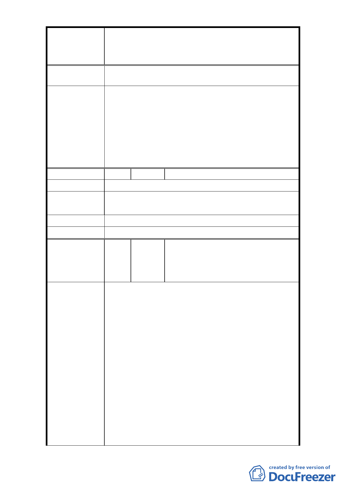

修訂臺北市大安區青田街保存區聚落風貌保存專用區細部計
案
名
畫、變更部分第三種住宅區、第三種商業區(特)為第三種住宅區
(特)(日式宿舍)及第三種商業區(特)(日式宿舍)暨劃定週邊地
區都市設計管制細部計畫案
3. 該教會係於本府 96 年公告計畫案前申請建築，故無
開挖率 60%上限規範。
一、本修訂案同意依據專案小組審查意見在兼顧保存
文化資產、歷史街區整體文化風貌形塑及土地所有
權人開發權益等考量下，將原公展範圍內之計畫區
委 員 會 決 議 依日式宿舍分佈密度與原貌保存程度區分為「文化
資產核心街區」、「歷史風貌街區」、「緩衝區」等三
個層級管制。
二、 依市府回覆意見辦理。
編 號 15 陳情人 王淑惠
陳 情 理 由 人民財產權應一律平等，不應受到特殊的限制。
解除管制，回復原有住三的所有(應有)權益，與其他市
建 議 辦 法 民享有同等住三權益。
市 府 回 覆 意 見 同編號 1 回覆意見。
委 員 會 決 議 同編號 1 決議。
葉淑珠、曾木森、林正平、李雪美、
編
號
16
陳情人
周芝嫻、駱槐仙、許光興、方玲、
田相舜、王渝慧、鄭玉卿、陳美妃、
曾水校
1. 本市青田街因鈞府為保存古蹟及歷史建物、而連帶
未經住民同意而匡住、限制了人民私有財，罔顧里
民財產及權益。
2. 大安區金華段二小段 81、78-2、99 地號土地之日式
宿舍已拆除，目前僅以停車空地使用，且四周緊鄰
老舊 4 樓、5 樓公寓。若以住三(特)管制將嚴重影響
周圍所在街廓辦理都市更新，嚴重影響市民私有財
陳 情 理 由 產，面臨老舊住宅推展都更之權益。
3. 鈞府文化局暨都發局於民國 96 年為古蹟及歷史建物
保存，而疏忽的連帶框住本區里民私有財之住三條
件。
4. 本社區原為住三區域，請市府應還我社區應有的權
益。
5. 本區里民之私有財產因都發局之疏忽而列為古蹟及
- 17 -